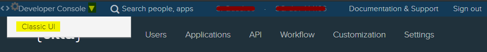
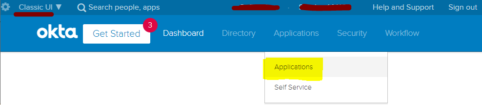
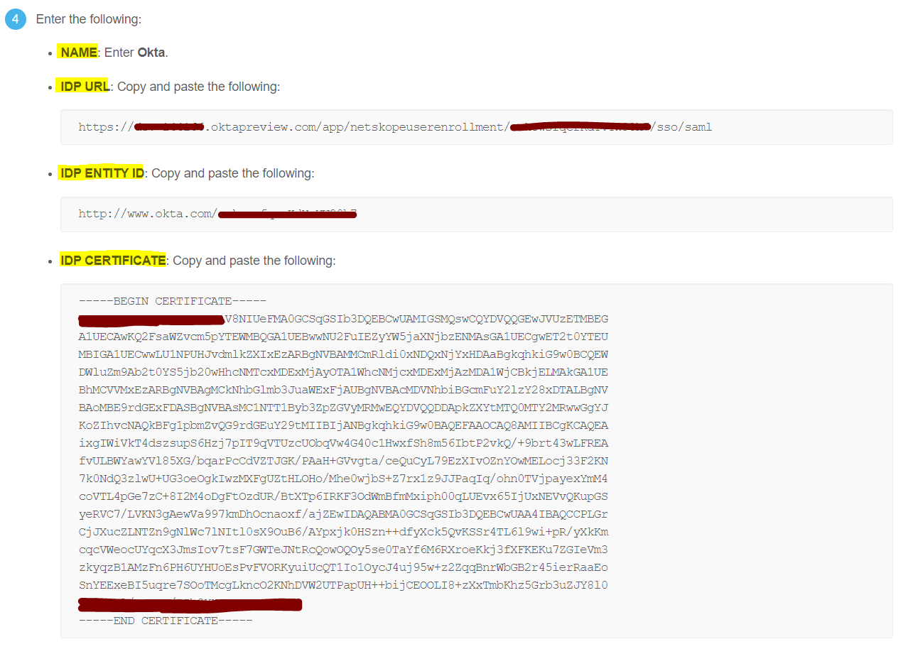

Configure Okta IdP for Netskope SAML – Forward Proxy
Log in to OKTA console.

Click Admin to go to the Admin console.

Click Developer Console and select Classic UI.
 From the menu select Applications > Applications.
 Click Add Application.

In the search bar, enter Netskope. This will list Netskope apps. Click Add on the first app for Netskope User Enrollment.

Enter an Application Label, like Netskope FP SAML Auth. Enter the subdomain and click Done.

Select Sign On (tab) and enter the Netskope Org ID you copied from the tenant UI. Set the Application username format as Email and click Save.

On the Sign On tab, click View Setup Instructions and copy these settings to configure in the Netskope UI: Name, IDP URL, IDP entity ID, and IDP certificate.

 Select the Assignment tab and add the users or groups who will be using it to sign-in via Netskope Client (IdP Mode).

The Okta SAML Auth configuration is complete.